Proprietary to General Electric Company
Direction 5670006, Rev# 1
Discovery MR750w GEM Service Methods
Module Version 9.0, Version Date 10/19/11
Proprietary to General Electric Company |
| Required Persons | Preliminary Reqs | Procedure | Finalization |
|---|---|---|---|
| 1 | Not Applicable | 120 min. for any non-GEM cable track; 120 min. for P3 ODU to MUX (GEM Only); 400 min. for PA to MUX (GEM Only); 220 min. for P2 or P4 (GEM Only) | Not Applicable |
This procedure describes the replacement of the Patient Table Cable Take-Up from the P port connection to the Table ODU connector, from the PA coil to the Multiplexer (MUX), and from the MUX to the ODU connector.
It is important to use the correct cable track in the replacement as the coil ID is contained within the P port connector.
Illustration 1: Table Diagram for Cable Track Replacement
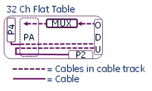
This instruction contains the following procedures:
Replacing the P2 or P4 Patient Table Cable Take-Up for 32-Channel GEM Flat Table
Replacing 32-Channel GEM Flat Table PA Multiplexer Box Assembly
Replacing 32-Channel GEM Flat Table P3 ODU to PA Multiplexer
| Item | Qty | Effectivity | Part# | Manufacturer | |
|---|---|---|---|---|---|
| MCRv Tool Kit (3.0T) | 1 | - | 5182417-2 | - | |
| Phillips Screwdriver | 1 | - | - | - | |
| Flat-Head Screwdriver | 1 | - | - | - | |
| Standard Allen Wrench Set | 1 | - | - | - | |
| Small Flat-Head Screwdriver with Long Shaft | 1 | - | - | - | |
| Pliers | 1 | - | - | - | |
| 2 in. x 4 in. Block of Wood, 10 in. long | 2 | - | - | - | |
| Standard Wrench Set | 1 | - | - | - | |
| Nonferrous Phillips Screwdriver | 1 | - | - | - | |
| Item | Qty | Effectivity | Part# | Manufacturer |
|---|---|---|---|---|
| Loctite® 242 | 0.5 cc | - | 46-170686P1 | - |
| Material Handling Gloves | 1 pair | - | - | - |
| ||||
| Strong Magnetic Field! | ||||
| Ferrous materials can become dangerous projectiles in the presence of the magnetic field Produced by the Magnet. | ||||
| Do not Bring any ferromagnetic tools or equipment into the magnet room. |
| ||||
| PERSONAL INJURY POSSIBILITY! | ||||
| WHEN PERFORMING MAINTENANCE ON THE TABLE IN ITS UP POSITION, SEVERE PERSONAL INJURY CAN OCCUR IF TABLE IS ACCIDENTALLY LOWERED DURING MAINTENANCE PERFORMANCE. | ||||
| ENSURE THAT THE LOCK SAfety BAR IS SAFELY IN PLACE. |
Undock the patient table and remove it from the Magnet Room.
Remove both Lower Base Side Covers and fasten the Upper Bellows in the up position. For more information, refer to Patient Table Upper Bellows and Lower Base Side Cover Removal.
Illustration 2: Patient Table Covers

| ||||
| PERSONAL INJURY POSSIBILITY! | ||||
| WHEN PERFORMING MAINTENANCE ON THE TABLE IN ITS UP POSITION, SEVERE PERSONAL INJURY CAN OCCUR IF TABLE IS ACCIDENTALLY LOWERED DURING MAINTENANCE PERFORMANCE. | ||||
| ENSURE THAT THE LOCK SAfety BAR IS SECURELY IN PLACE. |
Lower the Table Lock Safety Bar, then lower the table to ensure its weight is resting on the Safety Bar.
Illustration 3: Table Lock Safety Bar

Remove the bottom front cover, located on the front underside of the patient table, and the right or left table side cover (shown in Illustration 2) depending on which cable track is being removed.
Illustration 4: Bottom Front Cover
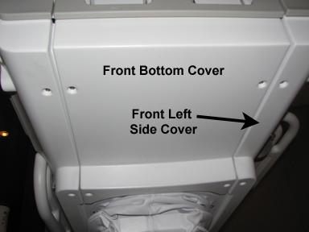
| NOTE: | When standing at the foot of the patient table facing the magnet, the Cable Take-Up P2 and P4 are on the right side and Cable Take-Up P3 is on the left side. |
Disconnect the gray TBL P3-J7 or P4-J7 cable from the Touch and Go Connector located in the upper left or right corner inside the table top.
Illustration 5: Touch and Go Connector

Remove the release handle cover.
Manually unlock the cradle and move it forward approximately 24 inches to clear the guide rails. For more information, refer to Removing and Replacing Cradle Assembly.
Illustration 6: Guide Rail Clearance

Raise the back side of the cradle to gain access to the two screws on each side of the rear section. When the screws are removed, set the cradle down.
Remove the three screws on the top of the rear section.
Illustration 7: Screws on Rear Section
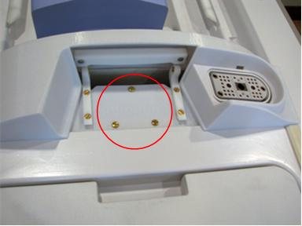
Remove the upper screw for each cover mounting block and rotate out of the way.
Illustration 8: Mounting Blocks Rotated
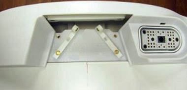
Lift off the rear section.
While wearing gloves, remove the left and right strap rails by sliding each one out from the rear of the cradle. Prop up the rear of the cradle to aid removal.
Illustration 9: Table Strap Rails
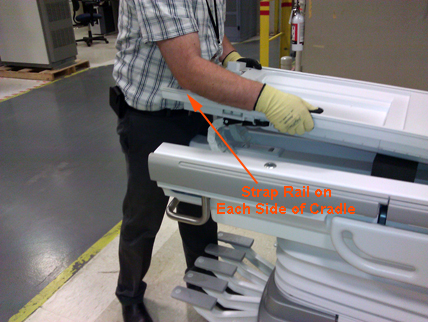
Slide the cradle top slightly toward the rear of the table to free the cradle top from the front section, and lift the cradle top off the cradle.
Remove the end rib and the shoulder screw.
Illustration 10: GEM Flat Table
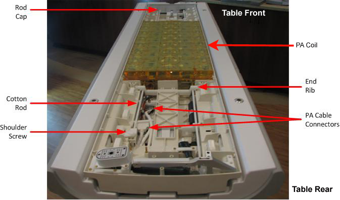
Carefully flex the cotton rod out of the rod cap, being careful not to lose any of the compression springs.
Carefully disconnect the PA Coil cable connections.
Illustration 11: GEM Flat Table Cable Connections
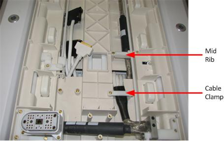
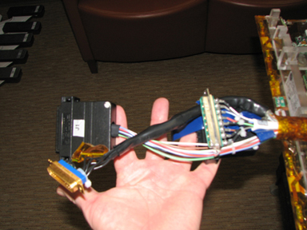
Remove the screws holding the PA Coil in the cradle, and carefully set the PA Coil aside.
Remove the remaining end ribs and mid ribs over the P2 cable.
Remove the cotton rod attachment, and rotate the cotton rod out of the way.
Illustration 12: Cotton Rod and Cotton Rod Attachment
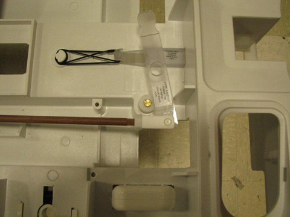
Release the cradle.
Move the cradle out from the table far enough to expose the bottom cover (front cable shield) beneath the P2 Connector.
Remove the front cable shield.
Detach the P port base before disconnecting the P-connector. Make note of the P port base orientation.
Disconnect the two P port connectors from the cradle and remove all cable clamps.
| NOTE: | Even though only one cable take-up is being replaced, this procedure requires removal of all cables from the cradle because the cradle must be removed from the patient table to access the cable take-up in the track wells. |
Use the wood blocks (or similar) to prop up the rear end of the cradle.
Disconnect the two cable tracks from the bottom of the cradle.
Carefully feed the cables and connectors through the holes located at the rear of the cradle, and remove the cradle from the table.
Mark the existing cable where the cable track begins so that when the replacement cable is placed in the track, the proper amount of slack is available.
Remove the two slotted brass screws from the cable take-up lead in the cable well.
Pull the rear of the cable take-up, lay it out at the front of the table to expose the cover plate and screws, and remove both screws.
Pull the cable take-up back into the cable well, and unlatch each cable track lid by prying up on the edge with a screwdriver. (Extra cable track lids are included as these cable track lids are somewhat fragile.)
When all cable track lids are open, feed the cable through the hole and pull the cable being changed below the table.
Open the cable take-up lids on the cable track below the table, and pull the cable being changed out of the cable track.
Remove the four screws on the cable grommet and pull the cables to the side.
Illustration 13: Table Cable Grommet
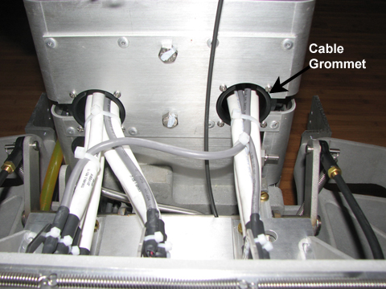
| NOTE: | If changing P2, both cable grommets will need to be removed. |
Cut any cable ties. If replacing the P2 Cable, disconnect the Table ID Cable from the bottom of the PA cable track. (Follow the top cable from the ODU P2 connector to the cable disconnect on the PA side of the table.)
Remove the two ODU P connector screws, and carefully pull the ODU connector out the back of the table side dock connector.
Measure the distance from the end connector to the cable track of the cable being replaced. Mark the new cable at that location so when the new cable is placed in the cable track, the same amount of slack is maintained.
Replace the cable by following the above steps in reverse order.
Connect the ODU cable.
If replacing the P2 cable, connect the Table ID cable.
Install the cable grommet.
Feed the cable through the cradle hole.
Close the cable take-up lids.
Attach the cover plate.
Attach the P port connectors and bases.
Attach the front shield.
Attach the end ribs, mid ribs, PA Coil, and connectors.
Attach the cotton rods.
Attach the strap rails.
Attach the rear section.
Attach the Touch and Go connectors.
Attach the covers after performing Finalization checks.
Illustration 14: Table Cable Track Wiring
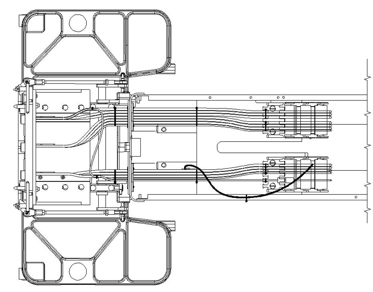
Perform Replacing the P2 or P4 Patient Table Cable Take-Up for 32-Channel GEM Flat Table, Step 1 through Replacing the P2 or P4 Patient Table Cable Take-Up for 32-Channel GEM Flat Table, Step 30.
If removing the P3 (PA Coil) cable track on the left side, disconnect the cables from the table Multiplexer found on the left side of the table.
Illustration 15: Table Multiplexer Located in Front Upper Left Corner
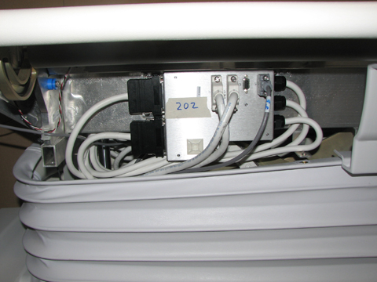
Unmount the Multiplexer from the Table.
Feed the cable track down through the hole in the Table and set the cable track assembly aside.
Reverse the steps above to install the new cable track.
Illustration 16: Final Cradle Cable Routing
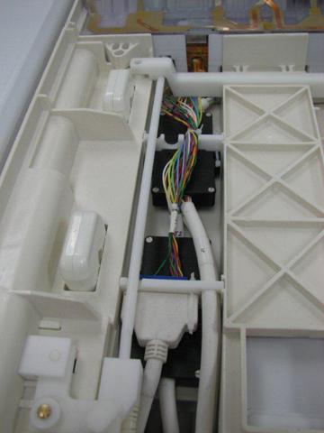
Undock the patient table and remove it from the Magnet Room.
Remove the left Lower Base Side Cover, and fasten the Upper Bellows in the up position. For more information, refer to Patient Table Upper Bellows and Lower Base Side Cover Removal.
Illustration 17: Patient Table Covers
| ||||
| PERSONAL INJURY POSSIBILITY! | ||||
| WHEN PERFORMING MAINTENANCE ON THE TABLE IN ITS UP POSITION, SEVERE PERSONAL INJURY CAN OCCUR IF TABLE IS ACCIDENTALLY LOWERED DURING MAINTENANCE PERFORMANCE. | ||||
| ENSURE THAT THE LOCK SAfety BAR IS SAFELY IN PLACE. |
Lower the Table Lock Safety Bar, then lower the table to ensure its weight is resting on the Safety Bar.
Illustration 18: Table Lock Safety Bar
Remove the bottom front cover (located on the front underside of the patient table) and the left table side cover. (See Illustration 4.)
Disconnect the gray Touch and Go Cable from the connector located in the upper left corner inside the table top. (See Illustration 5.)
Disconnect the cables attached to the Multiplexer. (See Illustration 15.)
Remove the screws holding the bottom of the cable track.
Illustration 19: GEM Table Cable Track Bottom Section
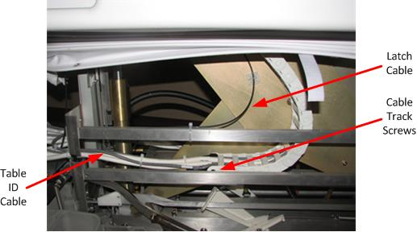
Remove the screws holding the top of the cable track.
Disconnect the Table ID cable, located near the bottom of the cable track. (The Table ID cable routes to the ODU P2 connector.)
Remove the four screws on the cable grommet and pull the cables to the side. (See Illustration 13.)
Remove the two screws holding the ODU P3 connector to the table dock connector, and carefully slide the cable out the back of the dock connector.
Reverse the steps above to install the new cable track.
| NOTE: | When reinstalling the bottom of the cable track and routing the latch cable, be sure to route the latch cable between cable and hydraulic cylinder. (See Illustration 19.) |
Dock the patient table.
Confirm the Cradle Release functions properly.
Confirm the Low Profile Carriage Assembly (LPCA) connects to the cradle and the cradle moves into the bore.
Check the coil datapath, referring to Coil Datapath Diagnostic.
If the Multiplexer was replaced, refer to 1.5T and 3.0T GEM MCQA Setup - PA Lower and GEM MCQA Setup - PA Upper.
Confirm functionality of Touch and Go landmarking functions on the table according to the instructions in Touch-n-Go Button Test.